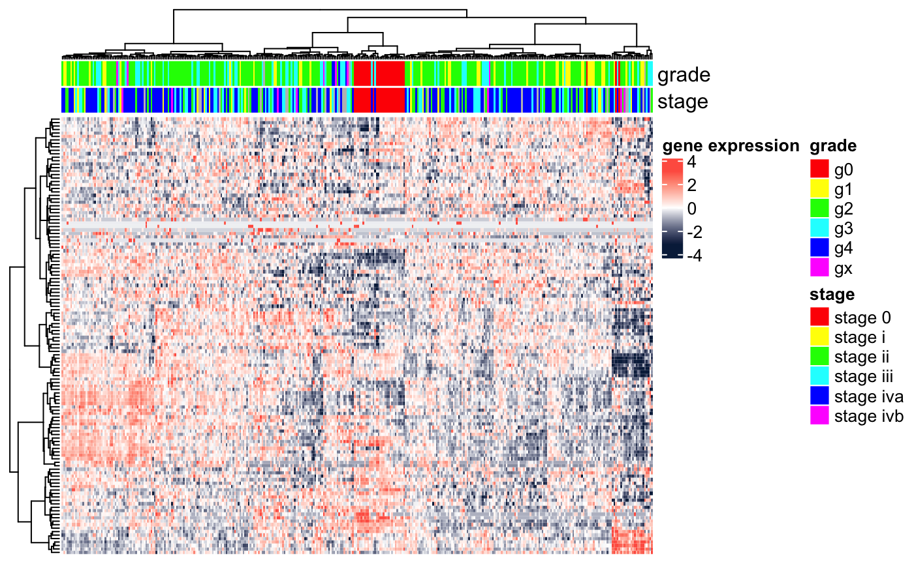
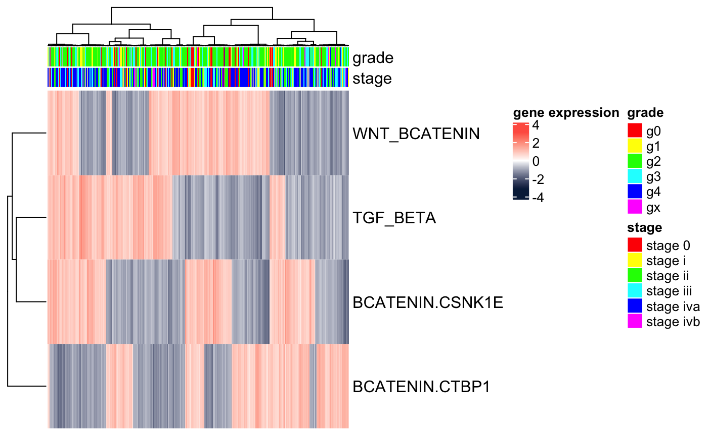

vignettes/docs/GeneSetProjectionGSVA.Rmd
GeneSetProjectionGSVA.RmdIn this module, we show how to use Kolmogorov-Smirnov (KS)-based scoring to map gene expression data to geneset expression data. The approach is useful to abstract from the gene level to the signature or pathway level, thus making the data more interpretable while at the same time making them more robust to potential batch-to-batch effects.
library(BS831)
library(GSVA)
library(Biobase)
library(cba)
library(ComplexHeatmap)
library(circlize)We start by requiring the necessary package and loading the data. The data consists of two objects: a “toy” expression dataset of 126 genes (gsp.eSet); and a list of four genesets (gsp.GeneSet).
data(gspData)
## make sure the expected objects have been uploaded ..
if (is.null(gsp.eSet)) stop("is.null(gsp.eSet)")
if (is.null(gsp.GeneSet)) stop("is.null(gsp.GeneSet)")
## show the size of the genesets and of the expression dataset
print(sapply(BS831::getGeneSet(gsp.GeneSet),length))## ST_WNT_BETA_CATENIN_PATHWAY
## 34
## PID_BETACATENIN_DEG_PATHWAY
## 18
## PID_BETACATENIN_NUC_PATHWAY
## 80
## REACTOME_TGF_BETA_RECEPTOR_SIGNALING_IN_EMT_EPITHELIAL_TO_MESENCHYMAL_TRANSITION
## 16## Features Samples
## 126 346We then rename the dataset rows, so as to have them indexed by gene symbols.
DAT1 <- gsp.eSet[fData(gsp.eSet)[,"symbol"]!="",] # eliminate rows w/o gene symbols
Biobase::exprs(DAT1) <- log2(Biobase::exprs(DAT1)+1) # log-transform the data
featureNames(DAT1) <- toupper(fData(DAT1)[,"symbol"]) # replace row names
DAT1$my_grade <- factor(DAT1$my_grade)
DAT1$my_stage <- factor(DAT1$my_stage)We next visualize the raw, gene-level, data. We use the heatmap function avaliable from heatmap.ggplot.R.
grade_col <- rainbow(n=nlevels(DAT1$my_grade)); names(grade_col) <- levels(DAT1$my_grade)
stage_col <- rainbow(n=nlevels(DAT1$my_stage)); names(stage_col) <- levels(DAT1$my_stage)
ha.genes <- HeatmapAnnotation(grade=DAT1$my_grade,
stage=DAT1$my_stage,
col=list(grade=grade_col,stage=stage_col))
Heatmap(t(scale(t(exprs(DAT1)))),
name="gene expression",
col=colorRamp2(c(-3, 0, 3), c("#072448", "white", "#ff6150")),
top_annotation=ha.genes,
cluster_rows=TRUE,
cluster_columns=TRUE,
clustering_distance_rows="euclidean",
clustering_method_rows="ward.D",
clustering_distance_columns="euclidean",
clustering_method_columns="ward.D",
show_parent_dend_line=TRUE,
row_title="",
show_column_names=FALSE,
show_row_names=FALSE)
We next use the package gsva to perform single sample geneset projection.
GSPdir <- gsva(DAT1, getGeneSet(gsp.GeneSet), mx.diff=FALSE, verbose=FALSE, parallel.sz=1)
## extract the ExpressionSet
print(dim(GSPdir))## Features Samples
## 4 346.. and visualize the results. In this toy example, we projected onto four genesets only. In reality, one can use an entire geneset compendium (e.g., all genesets in MSigDB’s c2.cp compendium) to obtain a richer output.
featureNames(GSPdir) <- c("WNT_BCATENIN","BCATENIN.CSNK1E","BCATENIN.CTBP1","TGF_BETA")
Heatmap(t(scale(t(exprs(GSPdir)))),
name="gene expression",
col=colorRamp2(c(-3, 0, 3), c("#072448", "white", "#ff6150")),
top_annotation=ha.genes,
cluster_rows=TRUE,
cluster_columns=TRUE,
clustering_distance_rows="euclidean",
clustering_method_rows="ward.D",
clustering_distance_columns="euclidean",
clustering_method_columns="ward.D",
show_parent_dend_line=TRUE,
row_title="",
show_column_names=FALSE,
show_row_names=TRUE)